Holiday
Thankful Event
This event doesn't have a monetary reward! For this I ask that you share people who you are thankful for that you met through Sky. Post as many as you'd like!
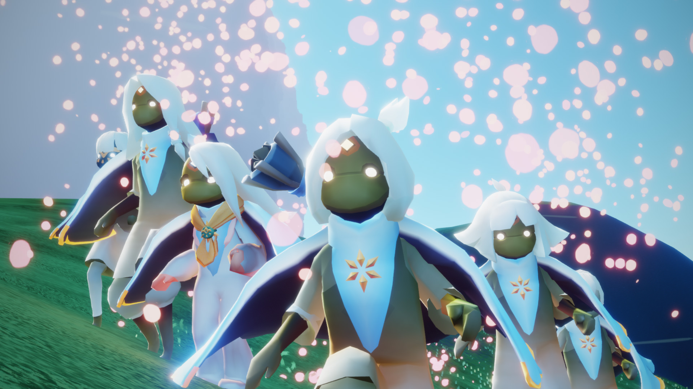
Amaya: "This picture is from one of my first big group interactions, before I was even friends with a lot of you. I think the only people I knew at this time was Ala'a, Howl, and Fiyu. I was really happy to be involved in this and it was a great chance to meet new people. I can't remember who some of the other people were but I know this was the first time I'd interacted with Assad."
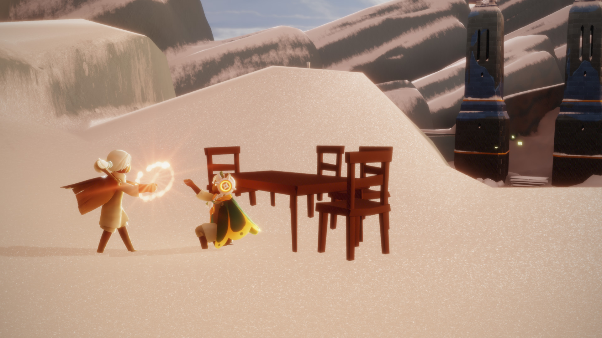Amaya: "Some of you have seen this picture already, but this was me becoming friends with lil mothy @Ala'a (Lolo) ⤠I am very thankful I met her by random chance, she is the reason I met all of you! Without Lolo I'd still be a solo player, or may not even be playing anymore."
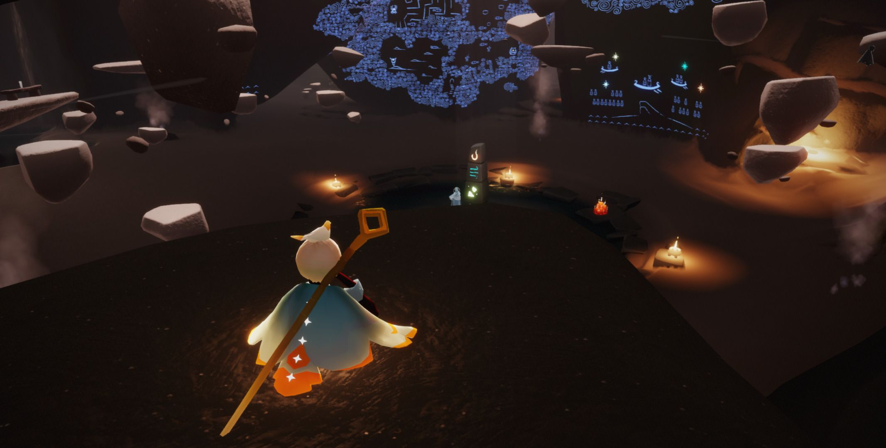Ruby: "This is where I was thankful a lot! After I teleported to Asadu I saw that cave for the first time 😊! And I saw @Howl and @Skylight_lyn both here with @coolestbadboi ✨ and I became friends with them 😊"
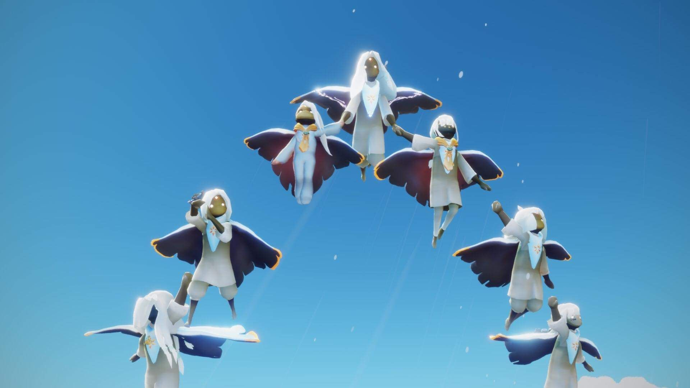Ala'a: "Hi everyone 😊
First of all, I looked cute even when I was a moth 😂
I'm thankful for Loli, without her I would never know about this game.. She introduced me to the game, some of you know her and some not, she was my friend from 5 years, or maybe 6 now! And maybe I lost her now, because also of sky I think..
But still I love her and I will always remember her and pray to her. And I will stay thankful for her that I know all of you now guys.
My favorite friends are: Amaya, Howl, and Assad.
First Amaya, I still remember when I was a moth I liked porting to you a lot, because you were so kind with me. Even your name that tgc put for you was Avit, and I kept knowing you as Avit for a really long time, till we opened chat and we started talking. I like to fly with u, I like to spend time with u, I love your character, and I'm thankful for you because I learnt lots of things from u, like how to deal with some of the things in my life and how to face it, you added something really special in me, and I love you a lot!
Howl, the friend who I talk to every day, I would feel weird if I didn't hear your voice everyday, I enjoy our conversations together, and the things that we talk about, its like we gonna save the world😂, I like your wisdom, and how you act with others, and how you think. I like how you really know what to do and what you really need from this world, and how you are respecting my friends, and the people that I care about, im really thankful for you for all of that, and for sure how you can let me feel better in my worst times, a call from you is enough for me to feel better. I love you so much!
Now Assad, Rengukoooo, I like how you find nicknames for everyone, and how you love to spend time with the people you love, and how you try your best if I was in a bad mood, I think if you were my real brother, you will be annoying 😂, but still you will be lovely. I love when you call me Nezuko, or Lolo, both of them are very nice from you! Love you boiiii!!"
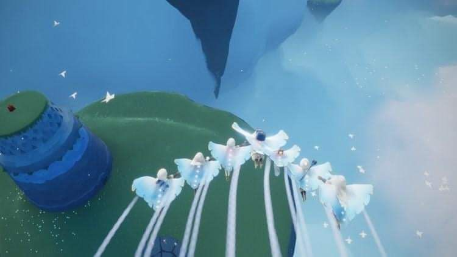Ala'a: "And the rest of you guys, Bee, Mercury, Reem, Fiyu, Ruby, Sat, Q, Mommy Daisy, Lyn, Zehan, and Sam Sam, I love you all guys, I didn't see bad things from u, some of you I didn't spend good time with, but what im sure about that you are all kind and so sweet, I never had hate for any of u, you are all good people in my vision, and I love to see you guys in the game, and say hi to you while I can, love you all
Those pictures for me, Loli, Assad, Howl, Fiyu, Amaya, im not sure who is the last one, but this cape was my first cape when I was a moth, and almost all of you wear normal pants so you can match with me since I had nothing yet, and I remember Loli dancing with us, we had a really nice time together, lovee youuuuâ¤"
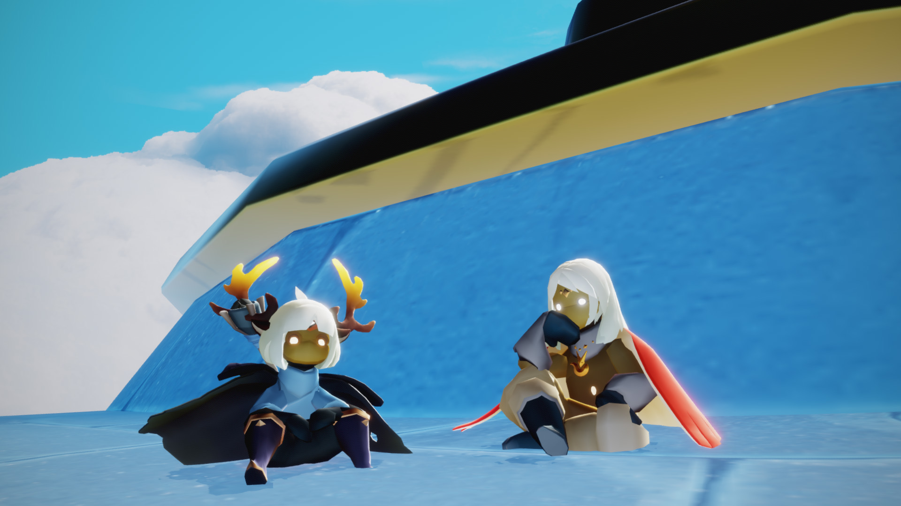Amaya: "I am thankful for lovely Howl, I am forever thankful that I met you. I really appreciate your friendship and how caring and loving you are, you truly feel like an older sister (sometimes even like a motherly figure) to me and it means a lot. We've gone thru some tough things together and even when I was afraid you wouldn't want to be friends anymore you never even let that thought cross your mind. You are amazing and supportive and I think everyone really needs to have a Howl in their life â¤"
 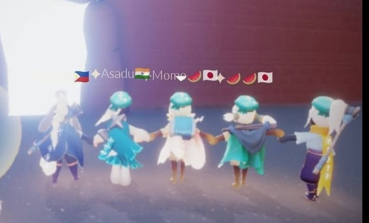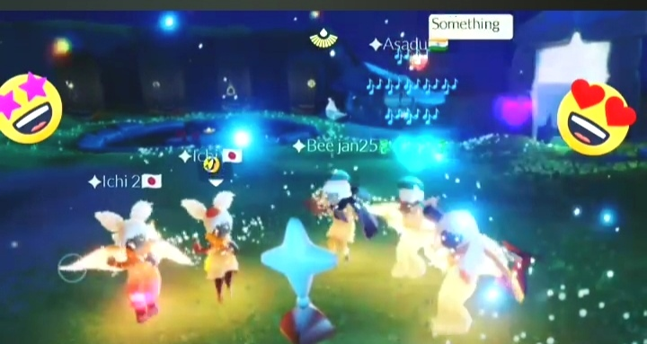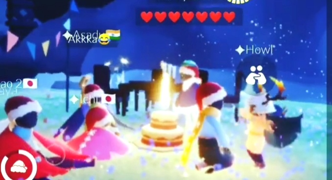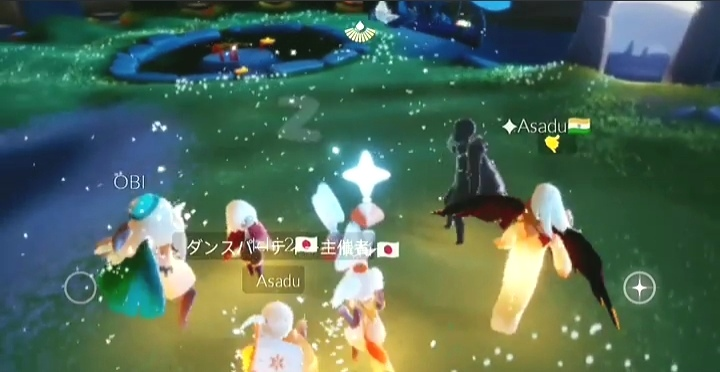
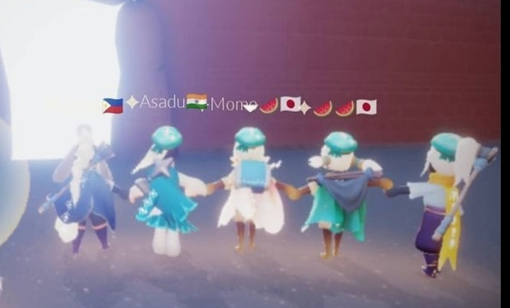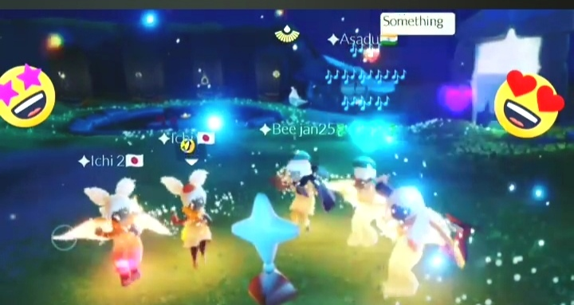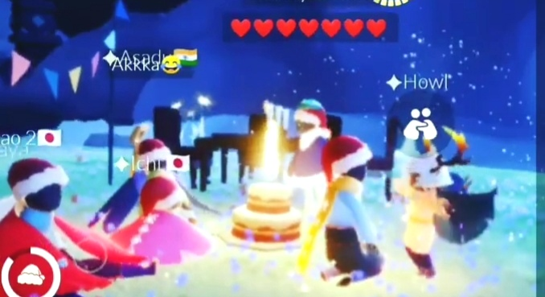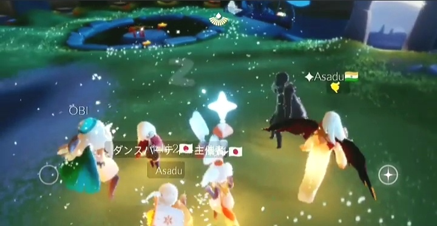 Lyn: "Hello everyone!!!
Thanks for this challange cause I can express how greatful I am for having all of you guys. I really had a great time with you and I can say that you are my second family. I really appreciate what you have done for me, showing your care and love on me, I really appreciate that....thanks for all the happy memories we've shared...you are all in my heart forever. Asadu, Kyte, Ichi, Amao, Howl, Lolo, Lulu, Momo, Watermelon, Pico, Bee, Obi, Vinu, Zehan, Amaya, Fiiooo, Ruby, Elif, Rachel, Mercury, Reem, Daisy, Rain, Jim...
I will keep the all memories in my heart... I love you all guys"
Lyn: "Hello everyone!!!
Thanks for this challange cause I can express how greatful I am for having all of you guys. I really had a great time with you and I can say that you are my second family. I really appreciate what you have done for me, showing your care and love on me, I really appreciate that....thanks for all the happy memories we've shared...you are all in my heart forever. Asadu, Kyte, Ichi, Amao, Howl, Lolo, Lulu, Momo, Watermelon, Pico, Bee, Obi, Vinu, Zehan, Amaya, Fiiooo, Ruby, Elif, Rachel, Mercury, Reem, Daisy, Rain, Jim...
I will keep the all memories in my heart... I love you all guys"
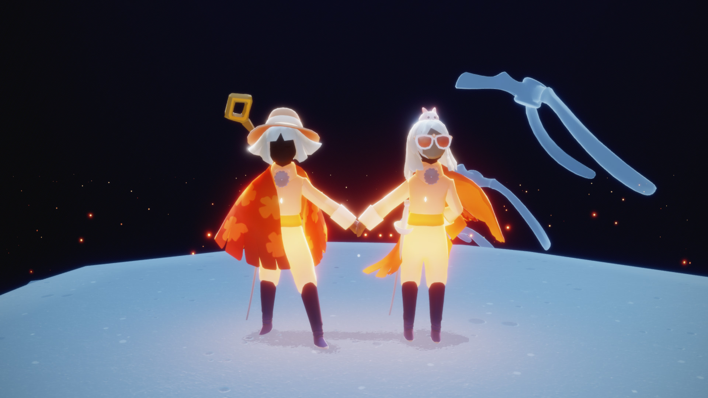Amaya: "I am thankful for sweet BeeğŸ, her beautiful music, crazy honking, and all the precious hugs she gives me every time we see each other ⤠Sometimes I just really need a hug and you always give them and it makes me feel very loved! "
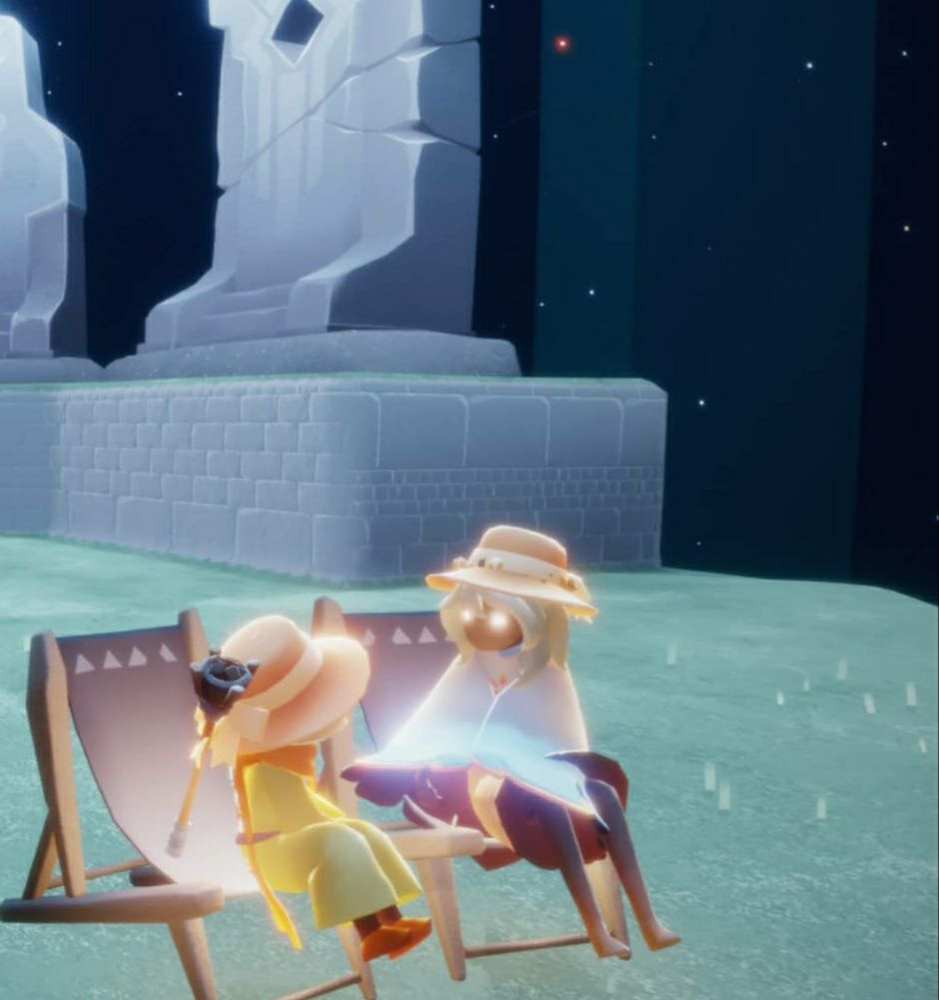Howl: "@Amaya I am so thankful for your friendship! I met you one day when you were hanging out with Lolo... I don't remember who offered the candle first... But looking back it was a wonderful moment in my life to meet you. I have treasured so many moments with you. I feel so confident in our friendship because we have gone thru so many good things and bad things together and our friendship has withstood all those tests. You are such a dear friend and I love you alot. You mean the world to me â¤ï¸"
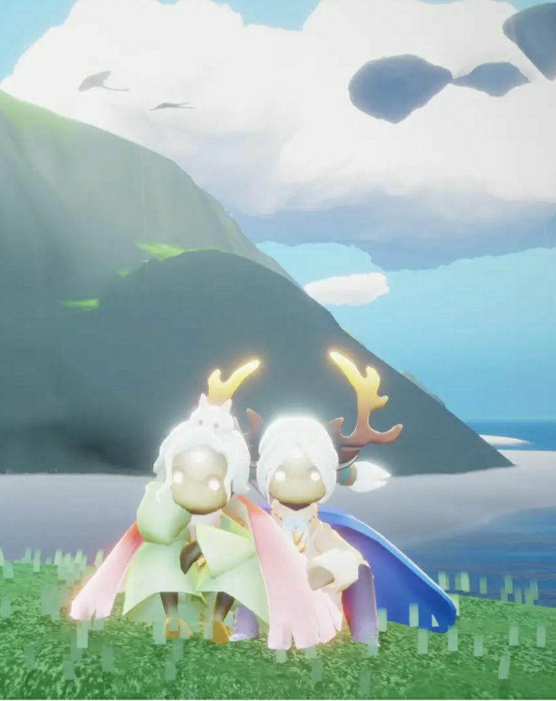Howl: "@Ala'a (Lolo) I never realized when I downloaded this game that I would meet my new best friend. I met Loli first when she was lost in the fire trial and I helped her find her way out. She introduced me to you and at first you were Alaa #2 😜... But quickly.. sooo quickly I learned to love you. Now I look back and think of the times I have laughed with you, cried with you, prayed for you, and treasured every moment talking on the phone. Now if a few hours goes by without hearing your voice or seeing what is happening in your life it makes me miss you. You became a sister to me or maybe even a daughter.. I just know u feel like my family. You know what makes me happy, my deepest sorrows and even the insecurities I try to hide from the world. I love you so much and I look forward to growing old with you as my friend. â¤ï¸"
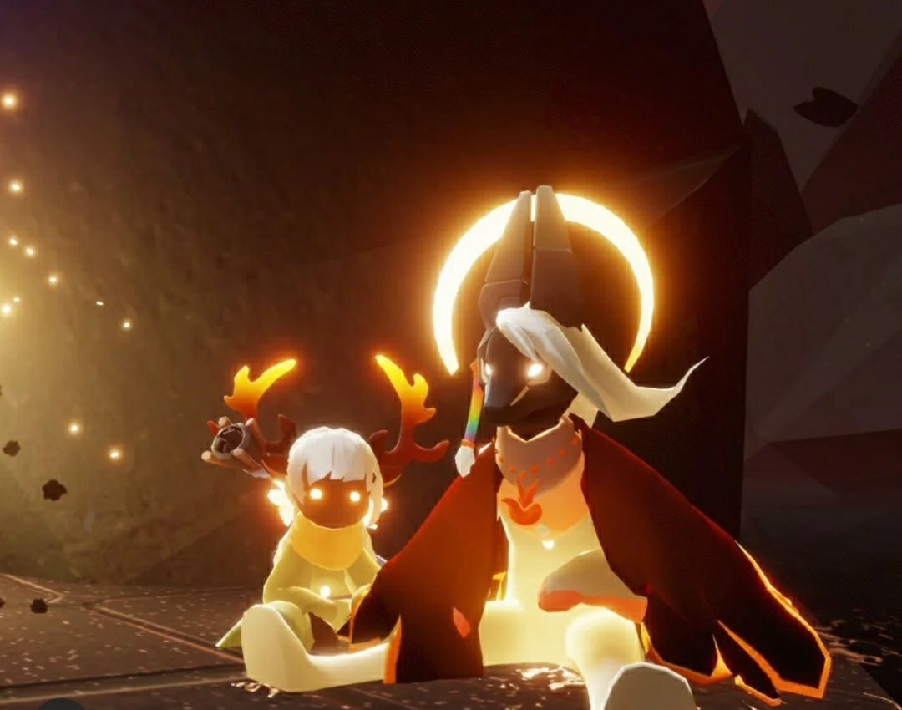Howl: "@coolestbadboi ✨ Asadu, MC Freazy 👑.. my brother. I can't even start to describe how grateful I am that you are in my life. You are the little brother I never had. My confidant, my biggest supporter, my protector. You were my third close friend in the game from around a year ago. I remember only playing with u when Kyte was around but you never wanted to accept my candle for the longest time 🤣 I remember the day Kyte made you take it cause she bugged u about it and was like... Just take it Assad. 🤣 And I remember thinking it was funny. But.. you know, that one day I was sitting in prairie just enjoying the view and you came and talked with me for like 2 hours. I started to see who you were and slowly I starting learning to love you. I think of your future and I smile and pray. I want so many good things for you. I treasure every moment we spend together. I'm grateful everyone morning to wake up to see "good morning Sistaaaaaa" and to end every day falling asleep talking to you. I love you so much 🥰 I trust you and I like you."
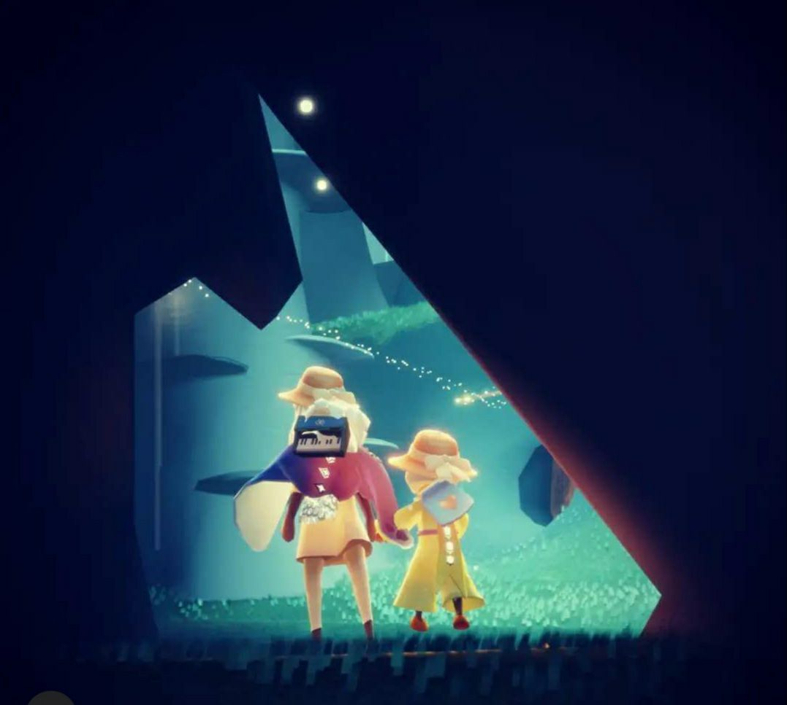Howl: "Howl — 11/22/2021
@ğŸªBeescuitğŸ Beeeeeeee... Oh my friend I am so grateful for you. You are the most sweet loyal friend. You may not realize it but you helped me thru some of my darkest times with your music and companionship. I remember a time I felt so broken and the deepest grief had come on me from a family situation... You sat with me for over an hour and played music and you wouldn't leave even when friends came asking you to go play. Even tho my character was afk I was listening and your friendship gave me strength to sit up and shake it off and say it's going to be ok. I just love you so much!!! I love how you get a little hyper and honk like a madwoman.. I love all the hugs... I love the crazy messes when you decide to take a group to the moon the slow way 🤣.. I have loved getting to know you and I really think you are an amazing young woman. I treasure your friendship ⤠I love you Beescuit"
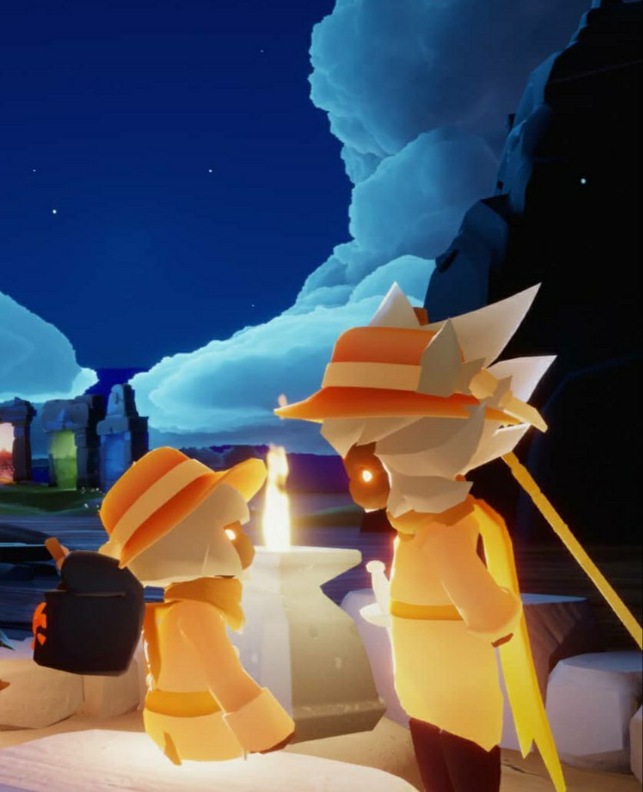Howl: "@thatmercury Mercuryeeeee my friend 🥰 AKA Veggie Lord 🥦🙠AKA Shaman Greyskull, AKA Mercelery, AKA Celery 😂😂 you know... I remember I kept hearing about this player named Thoth. I kept hearing what a fun guy he was.. so I really wanted to meet him. Then one day I was talking with Daisy and met you. This picture was from our first conversation. I was having so much fun goofing off with you and remember telling Lolo... You have to meet Mercury. I still remember a day or two later when you and Lolo were at home with me and she said your name Thoth... And I was like where is heeeee..... I was so shocked to find out you and Thoth were the same 😂😂😂. But you know, over time as I have gotten to know you it has been fun to hang out with you (its always a mess 😂), and I have treasured all the times we have conversations about silly things or even important things in life. You give me advice which always makes me consider carefully what I'm thinking and feeling. I really appreciate your brotherly advice and kindness. Mercury, I hope so many good things for you and I pray for you regularly. I wish you so much happiness every day and a bright and joyful future. I love you alot and I'm so grateful you are in my life. 💗"
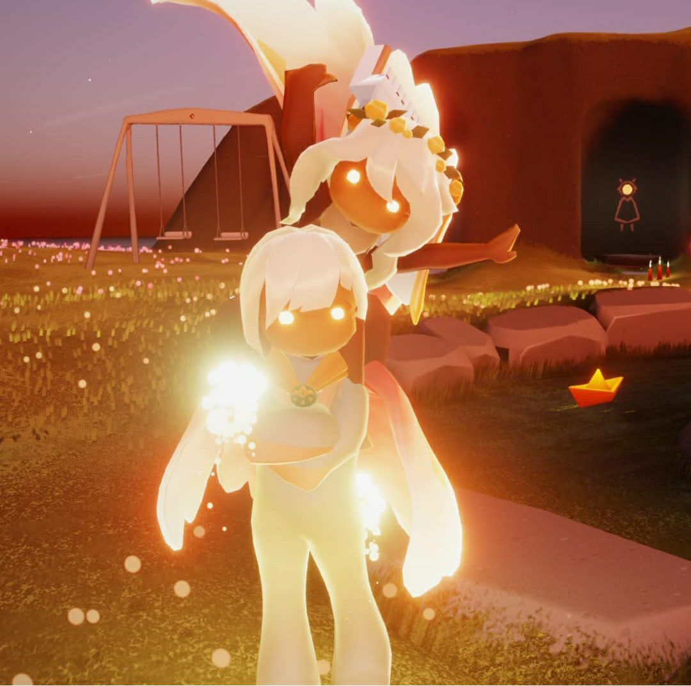Howl: "@Fyumi Fiyuuuuuu Sis â¤ï¸ oh my dear dear friend I love you so much!!! I remember meeting you in the Isle cave. We both knew Cho and we both ported to her and she was afk 😂 I remember we both sat there for a while and floated and goofed off and spammed cry emotes that she was sleeping. But u offered me your candle and opened chat and we flew off together 💗 that started a friendship I have really treasured. I know we don't hang out in game like we used to... And I really miss those days. But you still hold an important place in my heart. I think about you and pray for you regularly. You are a beautiful and special young lady. I am so grateful for all the friendship you have given me and for being there in my toughest times. I love you so much Fiyu Sis â¤"
 Bee: "@coolestbadboi ✨ @Amaya @Ala'a (Lolo) @Howl @reemarkable0 @Skylight_lyn @thatmercury My friends may I say that I am truly grateful to have met each and every one of you, you've all brought so much joy and laughter, even on days when I feel sad I can never stay that way around you guys.Never in my life have I met such funny, kind, and considerate people and for that , I thank you, for you all mean so much to me"
Bee: "@coolestbadboi ✨ @Amaya @Ala'a (Lolo) @Howl @reemarkable0 @Skylight_lyn @thatmercury My friends may I say that I am truly grateful to have met each and every one of you, you've all brought so much joy and laughter, even on days when I feel sad I can never stay that way around you guys.Never in my life have I met such funny, kind, and considerate people and for that , I thank you, for you all mean so much to me"
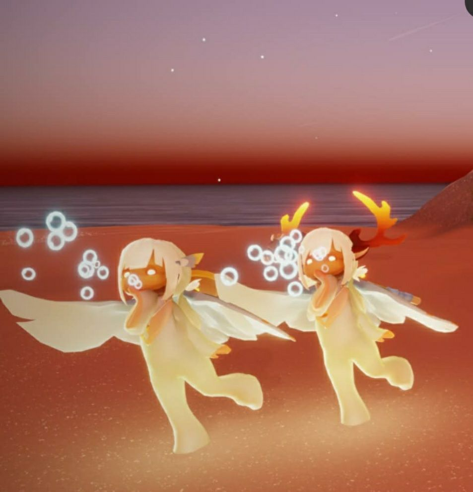Howl: "@reemarkable0 Reeeeeeeeeem 💗💗💗 I know I haven't known you as long as some of the others but I really love you alot and treasure our friendship. You have such a compassionate heart towards others and have such a sweet way with words. I always feel like you copy my clothes so much cause you know I am cute 😜😜😜ğŸ˜ğŸ˜ğŸ˜ğŸ˜ hehe kidding kidding. But seriously, you are a beautiful woman and I care about you so much 💗💗💗 I wish you all the happiness in the world and I am so proud of the hard work you are putting in for your master's degree. You can do it!!!! Love you so much Reemarkable 💗💗"
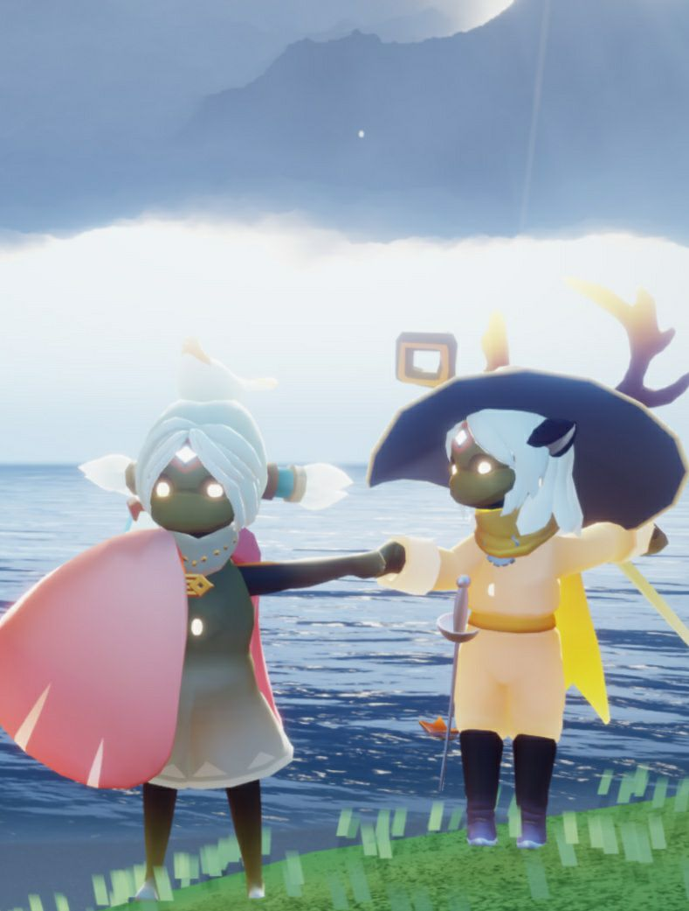Howl: "@Quartzite (any pronouns) Q!!!! Ah my friend Quartz! I am so happy to know you â˜ºï¸ the picture you drew of my character is one of my prized possessions â£ï¸ I love the times we get to hang out while you are on school break or have a few minutes to goof off. I love seeing the pictures of you playing with your real life papa or walking your doggos Carl and Monty.. or the school projects you work so hard on. I love what a creative and kind person you are 💗 you are a precious and dear friend and I am so grateful to know you 💗💗💗"
 Howl: "@SATURNØ Saturn ğŸ˜ğŸ˜ mi amore 💗 you are a really special and kind person. I am so grateful to count you as one of my friends. One of the things I love about you is that no matter how complicated my emotions are at the moment.. just being with you makes me feel calm and accepted. As I have gotten to know you, I just want more and more everyday for you to be happy and feel loved from the people around you, in real life and in the game. Your musical lyrics are lovely. You are truly an artist 🤗 I hope one day to hear your songs on the radio! Thank you for the song you wrote me â¤ï¸ it is so neat to see you take inspiration from the world around you and the friends you meet. I wish you all happiness and pray for you regularly. I love you so much â¤ï¸â¤ï¸â¤ï¸â¤ï¸ğŸ˜ğŸ˜ğŸ˜ love, your woodland fairy 😜"
Howl: "@SATURNØ Saturn ğŸ˜ğŸ˜ mi amore 💗 you are a really special and kind person. I am so grateful to count you as one of my friends. One of the things I love about you is that no matter how complicated my emotions are at the moment.. just being with you makes me feel calm and accepted. As I have gotten to know you, I just want more and more everyday for you to be happy and feel loved from the people around you, in real life and in the game. Your musical lyrics are lovely. You are truly an artist 🤗 I hope one day to hear your songs on the radio! Thank you for the song you wrote me â¤ï¸ it is so neat to see you take inspiration from the world around you and the friends you meet. I wish you all happiness and pray for you regularly. I love you so much â¤ï¸â¤ï¸â¤ï¸â¤ï¸ğŸ˜ğŸ˜ğŸ˜ love, your woodland fairy 😜"
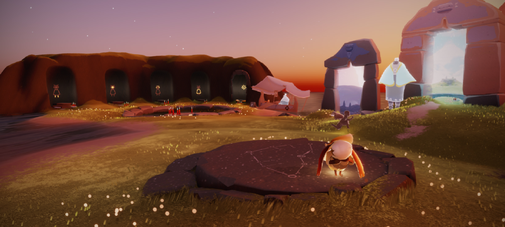Yamih: "I'm new at this channel and I've only had the opportunity to play a little with Howl. I'm thankful for her invitation and for being so nice, welcoming and kind 💖
I'm sharing my first pic at sky.
I'm thankful for this game and for all the people I've had the chance to interact. 💖"
 Assad: "@Howl 🥀✨ I am rly glad to meet HOWLZ 🙈 the gorgeous beauty even idk that she will be a part of my of life as a my sistaaaaa for me when I meet here she was humble and very very kind person 😠when I meet I started to understanding here for like Here activities that make started liking here admiring here this pic was the first pic with kyte and @HOWLZ they are both my fav even still I respect them and HOWLZZZ u mean a lot to me sisstaaaaa my sky idol, my biggest supporter, ur my 2 most close friend in sky and I love u more and more and more and one thing that make u a cool person is @Howl ⚡u understand them when they were sad and try to make them happy in that way u earned my heart seriously ur awesome person sistaaaaa well I have some of my fav but they are personal fav one of me obi,ichigochan, she is my personal fav @Howl HOWLZ and @Ala'a (Lolo) NEZUKO ✨ and Kyte akkaaa! And I like u and I trust u and I love u howllly 🤤✨"
Assad: "@Howl 🥀✨ I am rly glad to meet HOWLZ 🙈 the gorgeous beauty even idk that she will be a part of my of life as a my sistaaaaa for me when I meet here she was humble and very very kind person 😠when I meet I started to understanding here for like Here activities that make started liking here admiring here this pic was the first pic with kyte and @HOWLZ they are both my fav even still I respect them and HOWLZZZ u mean a lot to me sisstaaaaa my sky idol, my biggest supporter, ur my 2 most close friend in sky and I love u more and more and more and one thing that make u a cool person is @Howl ⚡u understand them when they were sad and try to make them happy in that way u earned my heart seriously ur awesome person sistaaaaa well I have some of my fav but they are personal fav one of me obi,ichigochan, she is my personal fav @Howl HOWLZ and @Ala'a (Lolo) NEZUKO ✨ and Kyte akkaaa! And I like u and I trust u and I love u howllly 🤤✨"
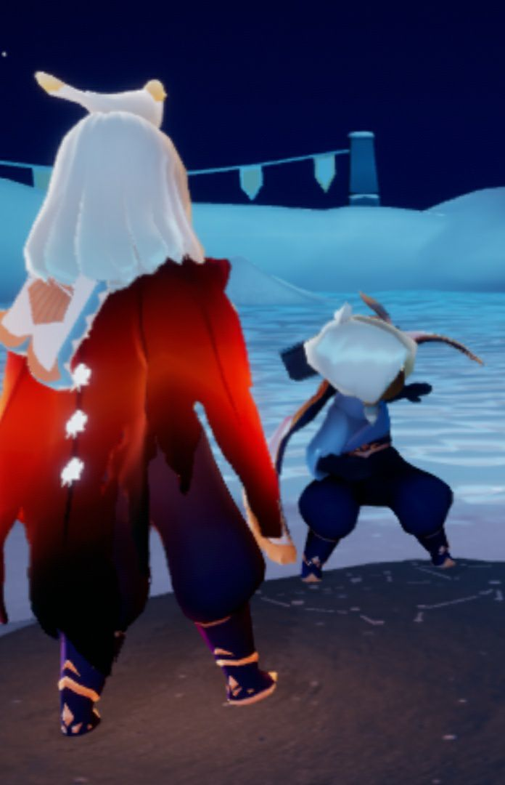Ruby: "Nelly is my old sky friend. We meet in the days we just play sky,that mean we friend when we just a moth! She also my hearts trading, @Skylight_lyn is the one in this sever have met her. She is a very gud friend. 🤗â¤"
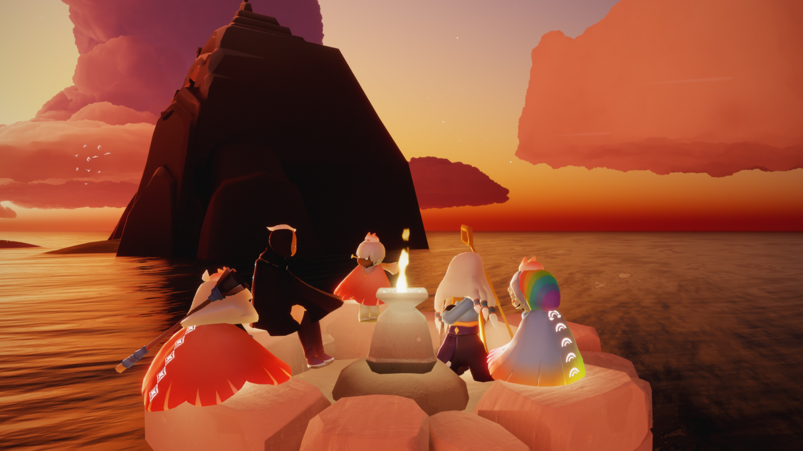Amaya: "Amaya — 11/23/2021
This is when I met @reemarkable0 !
I am very happy I got to meet you and become friends Reem 🥰 I had heard of you before meeting from Howl and Mercury but wow I was so amazed when we actually talked! You are so sweet and lovely I was taken aback... You just have that precious kind of personality that made me want to be your friend the first time we met â¤ï¸ I know we aren't suuuper close and don't hang out much but I have really enjoyed all of the times we have had chats and I hope to have many many more with you in the future!"